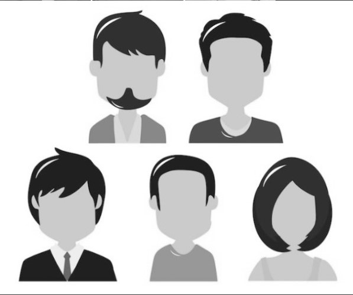

Objetivos:
- Iniciar os trabalhos com o Google Colab e o OpenCV;
- Visualizar imagens e alterar a resolução delas;
- Gravar um Vídeo e mostrá-lo no Colab;
INSTRUÇÕES:
- Montem uma foto geral com TODOS os integrantes do GRUPO, sendo que cada um deve usar uma roupa de cor diferente, melhor se for com as cores Vermelho, Verde e Azul destacadas. Cuidem para a iluminação ficar boa. Logicamente podem usar qualquer editor de imagem para “Compor” as fotos individuais que cada um vai tirar...
- Façam uma segunda foto-montagem, substituindo cada um por um “Avatar”. Meu “Avatar” por exemplo, é o Pikachu... Novamente, podem editar a gosto.
- Filmem e editem DOIS vídeos: um com mudanças lentas de movimento e outro com mudanças rápidas de movimento. Em cada um dos vídeos os membros do grupo DEVEM ser diferentes. Podem ser apenas dois membros, um em cada vídeo, e sugiro escolherem os que possuem as melhores câmeras.
- Apresentem as imagens originais e as versões em P&B delas;
- Apresentem as imagens com duas resoluções diferentes cada;
- Apresentem os vídeos com mudança de resolução, 25% e 50% dos originais;
- Descrevam todos os procedimentos realizados. i) Não se esqueçam de fazer SEMPRE a Áudio Descrição do que está sendo mostrado no relatório em HTML!
- Disponibilize o código .ipynb do notebook e coloque o “link” dele no seu html5.
- TUDO, textos, imagens e vídeos só no .html, e já linked na página de rosto do seu grupo, sendo que só devese submeter no Tidia4 o link atualizado desta página, logicamente com todos os arquivos dela.
- Se a página de vocês estiver no GitHub, facilita minha correção, pois ele tem um servidor html, que permite a visualização lá mesmo.
Foto Original dos Integrantes do Grupo
Resolução: 470x466
Foto dos Integrantes do Grupo em Preto e Branco
Resolução: 470x466
Imagem Original dos Avatares
Resolução: 597x497
Imagem dos Avatares em Preto e Branco

Resolução: 597x497
Imagens Coloridas Redimensionadas em 1,5x
Resolução: 705x699
Resolução: 746x896
Imagens em Preto e Branco Redimensionadas em 1,5x

Resolução: 705x699
Resolução: 746x896
Imagens Coloridas Redimensionadas em 0,5x
Resolução: 235x233
Resolução: 298x248
Imagens em Preto e Branco Redimensionadas em 0,5x
Resolução: 235x233
Resolução: 298x248
Vídeos com a Resolução Original
Vídeo Lento
Vídeo Rápido
Vídeos com Resolução em 50%
Vídeo Lento
Vídeo Rápido
Vídeos com Resolução em 25%
Vídeo Lento